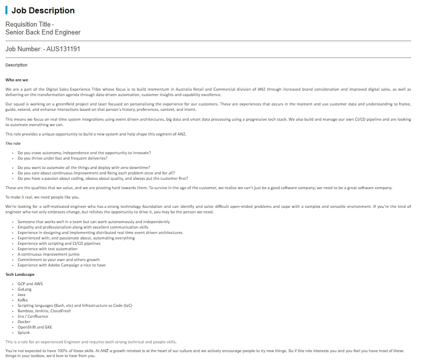

https://anzglobal.taleo.net/careersection/anz_aus_ext/jobdetail.ftl?job=AUS131191&lang=en&src=JB-10029
https://www.linkedin.com/jobs/view/senior-back-end-engineer-at-anz-2577874284?refId=Te8g0ak%2FUlJV6s3wUAlMjw%3D%3D&trackingId=Z1HN2BSso%2BYRm%2BwhdeDncQ%3D%3D&trk=public_jobs_topcard-title&originalSubdomain=au
A back-end engineer is responsible for focusing on the inner workings of web applications to build out the coding language that that runs behind the scenes of the “back-end”. In this role advertised by ANZ, they are seeking someone who can benefit their team by helping in their goal of building a new system through the use of their own CI/CD pipeline, to automate everything they can. This role appeals to me because it heavily involves many different coding languages, which is of interest to me. It also involves critical and independent thinking, which is a strength of mine. This is a role for someone who's knowledgeable in all things IT, and wants to help create something that will help many people.
The selected applicant will need:
- Excellent communications skills
- The ability to work in a team efficiently
- Will strive to always improve themselves in all aspects of their work and life
- Be well versed in a multitude of programming/coding languages such as java, Golang and Python,
- They should be an experienced engineer and have good people skills to be able to understand and assist those around you, and lastly
- They should be passionate about programming and automation.
Given that I don’t have much IT experience in my background, I think my skill set (specific to IT) is currently underdeveloped, however I am always striving to improve myself and pushing myself to learn everything I can and want to. As I previously mentioned, I have strong critical thinking skills, and a natural tendency to complete tasks in a time-efficient manner, which I think would support me in my IT education pathway.
- Through this course, I hope to develop skills relating to:
- Understanding multiple programming languages
- Gaining work experience in related fields
- Communication (both written and oral)
- Time management (e.g., adapting my current time management strategies to an IT workload), and
- Taking initiative in the work place to show that I can step up to the challenge when asked to take on any additional responsibility
screenshot of job incase the link expires
